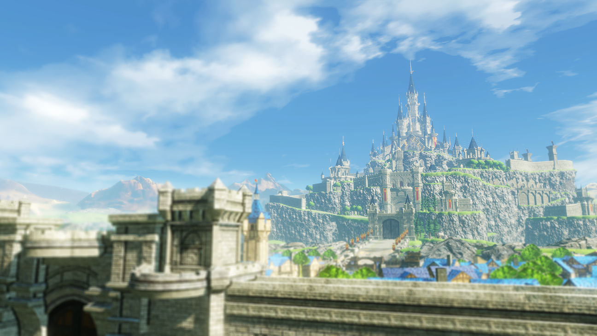
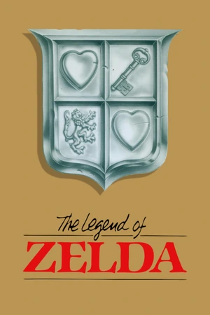
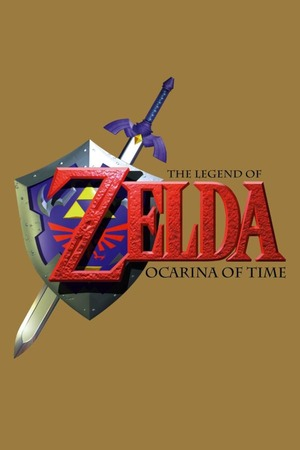
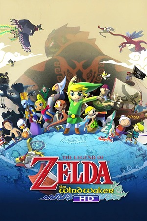
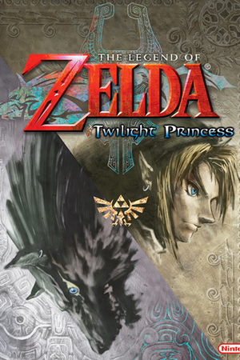
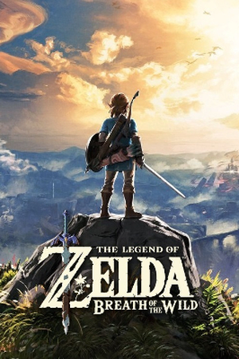
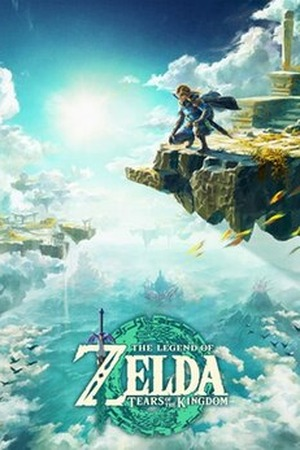
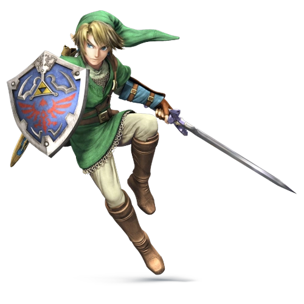
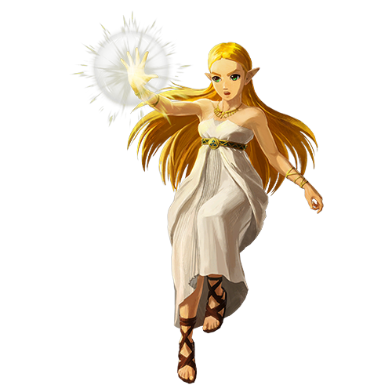
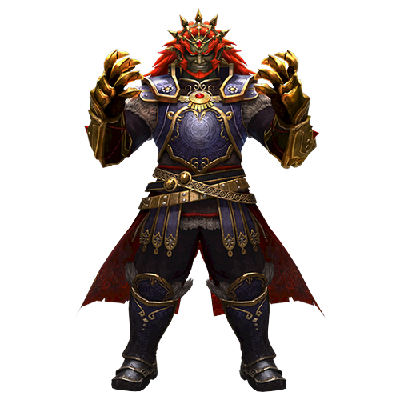

A História de Zelda
The Legend of Zelda é uma franquia de jogos desenvolvida pela Nintendo. Sua estreia aconteceu em 1986, com o lançamento do primeiro jogo para o Nintendo Entertainment System.
A maioria dos jogos acompanha Link, um jovem herói que precisa enfrentar diversos desafios para proteger o reino de Hyrule.
A princesa Zelda também possui um papel fundamental na franquia, estando relacionada à proteção do reino e ao poder da Triforce.

Principais Jogos da Franquia
Conheça alguns dos jogos mais importantes de Zelda.

The Legend of Zelda
Lançado em 1986, foi o primeiro jogo da franquia. Nele, Link precisa salvar a princesa Zelda e enfrentar Ganon.

Ocarina of Time
Lançado em 1998, apresenta Link viajando entre a infância e a vida adulta para impedir os planos de Ganondorf.

The Wind Waker
Lançado em 2002, apresenta uma aventura em um enorme oceano, onde Link explora diversas ilhas.

Twilight Princess
Lançado em 2006, apresenta uma aventura em que Link precisa salvar Hyrule de uma dimensão conhecida como Reino do Crepúsculo.

Breath of the Wild
Lançado em 2017, apresenta um enorme mundo aberto para explorar, com desafios, santuários e inimigos.

Tears of the Kingdom
Lançado em 2023, expande o universo de Breath of the Wild, apresentando novas habilidades e ilhas flutuantes.
Personagens Principais
Link

O herói da franquia, responsável por enfrentar as forças do mal e proteger Hyrule.
Princesa Zelda

Princesa de Hyrule e personagem fundamental para a história da franquia.
Ganondorf

Um dos principais vilões da franquia, conhecido por tentar conquistar Hyrule.
Curiosidades Sobre Zelda
Você sabia?
- O primeiro jogo da franquia foi lançado em 1986.
- O nome Zelda foi inspirado em Zelda Fitzgerald.
- A Triforce representa Poder, Sabedoria e Coragem.
- Link e Zelda são personagens diferentes.
- Ocarina of Time foi o primeiro jogo da franquia em 3D.
Linha do tempo
- 1986 - The Legend of Zelda
- 1998 - Ocarina of Time
- 2002 - The Wind Waker
- 2006 - Twilight Princess
- 2017 - Breath of the Wild
- 2023 - Tears of the Kingdom
Saiba Mais
Para conhecer mais sobre a franquia, acesse o site oficial da Nintendo.
Site Oficial de The Legend of Zelda